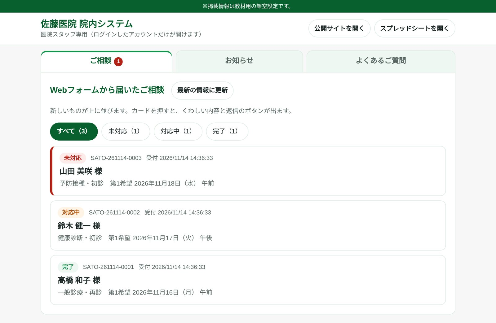
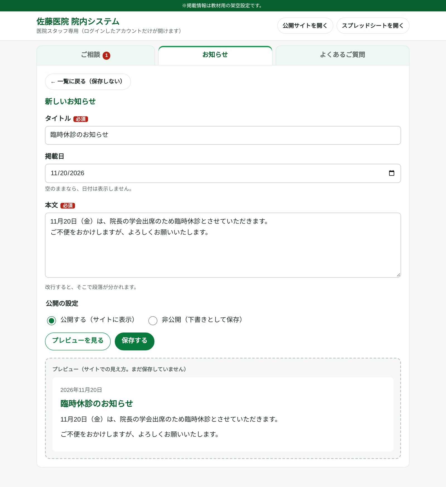
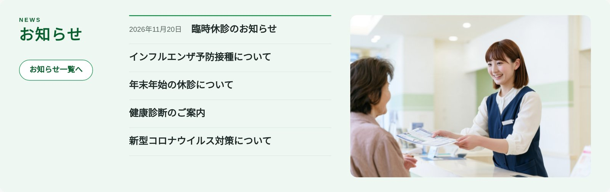

STAFF
院内システムのご案内
佐藤医院のスタッフが使う管理画面です。ホームページのお知らせ・よくあるご質問の更新と、Webフォームから届いたご予約・ご相談の管理を、ブラウザだけで行えます。
開き方
- ブラウザのプライベートウィンドウ（Chrome ではシークレットウィンドウ）を開きます。
- 下のボタンを押し、医院の Google アカウントでログインします。
医院のアカウントでログインした人だけが開けます。ほかの Google アカウントにもログインしているブラウザでは「ページが見つかりません」と表示されることがあるため、プライベートウィンドウで開いてください。
ご予約・ご相談の管理
Webフォームから届いたご予約・ご相談が、新しい順に並びます。まだ対応していないものは赤い印で目立たせ、「未対応・対応中・完了」の対応状況とメモを残せます。「Gmail で返信する」を押すと、宛先と件名が入った返信の画面が開きます。

お知らせ・よくあるご質問の更新
題名と本文を書いて「公開する」を選ぶだけで、お知らせを載せられます。保存する前に、ホームページでの見え方をプレビューで確かめられます。並べ替えや、いったん非公開にして下書きに戻すこともできます。よくあるご質問も同じ操作です。

ホームページにすぐ反映
「公開」にしたお知らせは、トップページ（新しい5件）とお知らせのページに表示されます。ホームページのファイルを書き換える必要はありません。

しくみ：Google スプレッドシートと Google Apps Script（無料）で動いています。データはスプレッドシートに保存され、院内システムからもスプレッドシートからも確認できます。
※画面の写真は、架空のテストデータで撮影したものです。